TCD6 - La télécabine des Chavannes
Les Gets et le secteur des Chavannes
La station des Gets est située en Haute-Savoie, au niveau du col du même nom, qui sépare la vallée d'Aulps de celle du Giffre. Le village compte environ 1300 habitants à l'année. La station est reliée au vaste domaine franco-suisse des Portes du Soleil, qui regroupe 12 stations pour un total de 650 kilomètres de pistes balisées, l'un des plus grands domaines skiables au monde.
Aux Gets, on skie sur deux secteurs principaux : le Mont Chéry, exposé sud, moins fréquenté, et les Chavannes, accolé à celui de Morzine, qui assure la liaison avec le reste des Portes du Soleil.
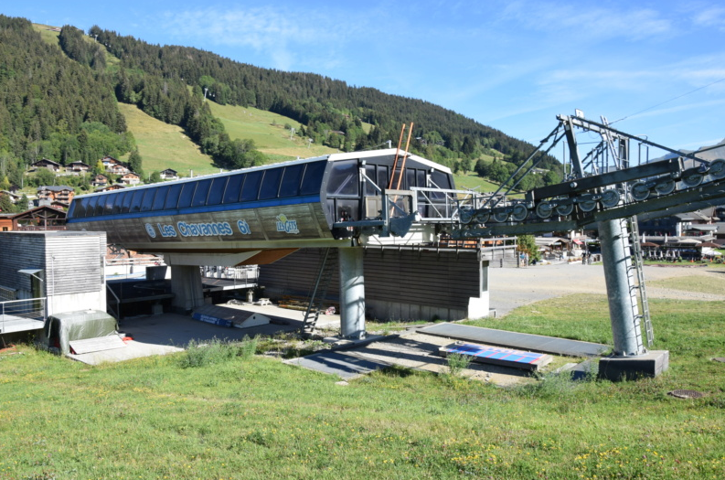
Histoire du secteur
Durant l'été 2010, la Sagets, exploitant du domaine des Gets, engage un plan de restructuration du front de neige du secteur des Chavannes, incluant le remplacement de la télécabine et du téléski historique de la Boule de Gomme, datant de 1936.
L'ancienne télécabine des Chavannes, construite par Poma en 1973, était une télécabine quadriplace de type œuf, équipée d'une double pince S. Sa vétusté et son débit insuffisant ont conduit à son remplacement. Pour optimiser les coûts, la Sagets a choisi de conserver une grande partie de l'ancien appareil, notamment la plupart des pylônes ainsi que le bâtiment de la gare amont. La construction du nouveau téléporté a été confiée au même constructeur, Poma, 37 ans après.
La nouvelle télécabine, réalisée sur mesure avec des gares Satellit adaptées aux contraintes de l'existant, est équipée de 39 cabines Diamond C6S150 du carrossier Sigma, chacune pouvant accueillir 6 personnes réparties sur deux banquettes de 3 places. En hommage à l'ancienne installation, la couleur rouge des cabines d'origine a été conservée. L'accouplement au câble se fait par pince Oméga T.
Localisation géographique
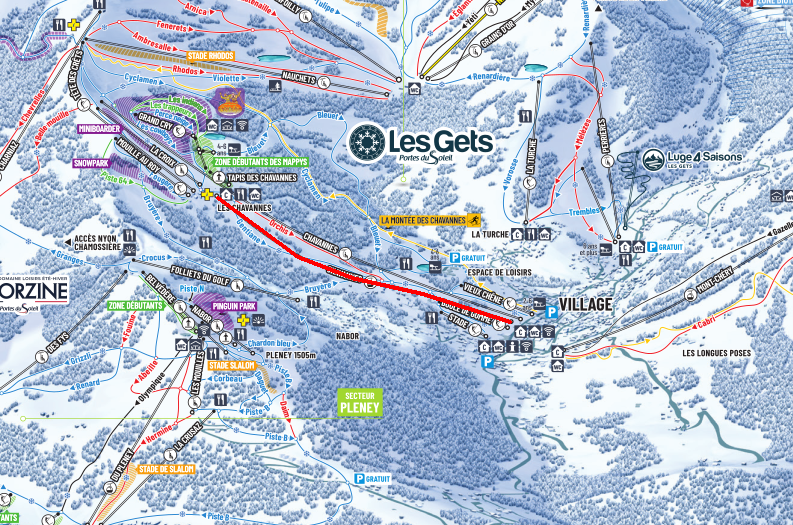
Caractéristiques
La télécabine des Chavannes est une télécabine à attaches débrayables 6 places, construite par Poma et mise en service en 2010. Elle offre un débit de 1200 personnes par heure, extensible à 1500 par ajout de cabines, à une vitesse de 5,0 m/s, pour une durée de trajet d'environ 6 minutes et 30 secondes.
La gare aval se situe à 1172 mètres d'altitude et la gare amont à 1490 mètres, soit un dénivelé de 317 mètres pour une longueur de ligne de 1529 mètres. La pente moyenne est de 21 % et la pente maximale atteint 50 %.
Les gares, motrice et tension, sont toutes deux situées en aval, avec une tension hydraulique. La montée s'effectue par la droite. La ligne compte 11 pylônes, et l'installation dispose de 39 cabines Diamond C6S150 équipées de pinces Oméga T.
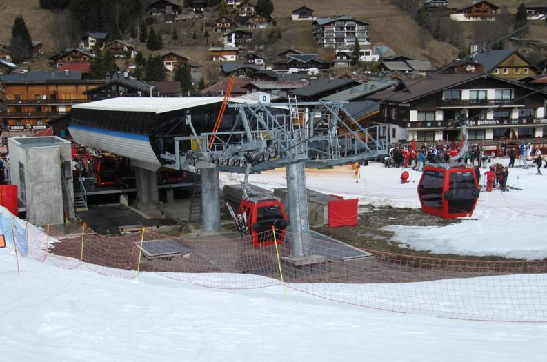
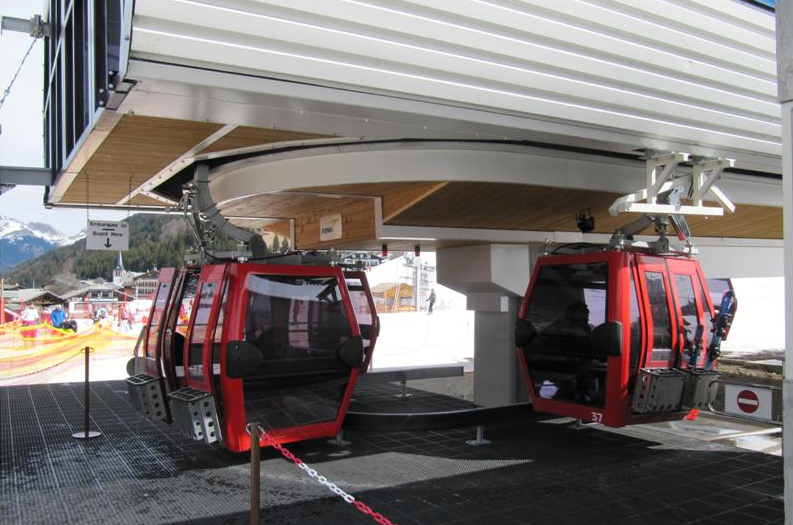
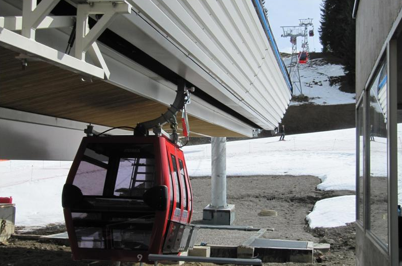
Ligne
La ligne présente la particularité de mêler deux types de pylônes : par souci de maîtrise budgétaire, une grande partie des pylônes en treillis de l'ancienne ligne a été conservée, seuls les pylônes P0, P7 et P11 ayant dû être remplacés par des pylônes tubulaires. Le tracé monte de façon régulière de la gare aval jusqu'au P2, puis la pente s'adoucit jusqu'au P7, dont la compression redonne une inclinaison plus soutenue jusqu'en gare amont. La ligne compte 3 balanciers compression et 8 balanciers support.
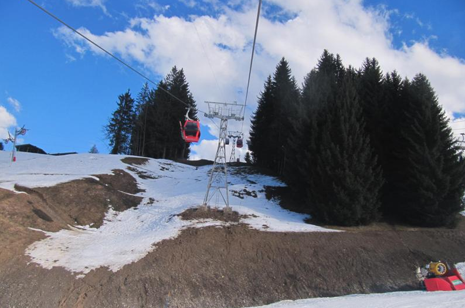
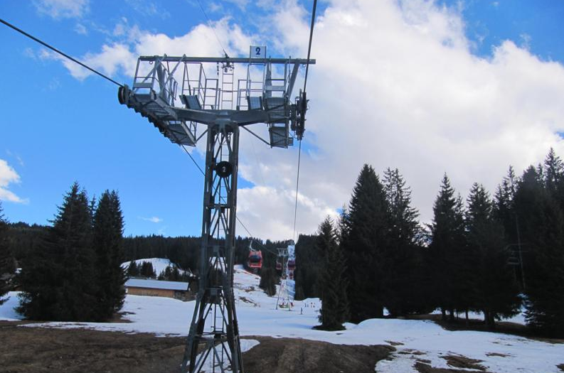
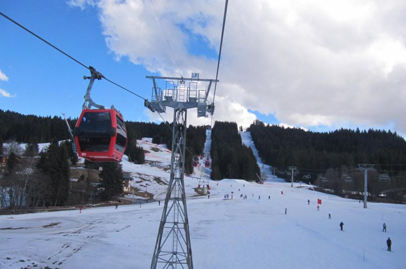
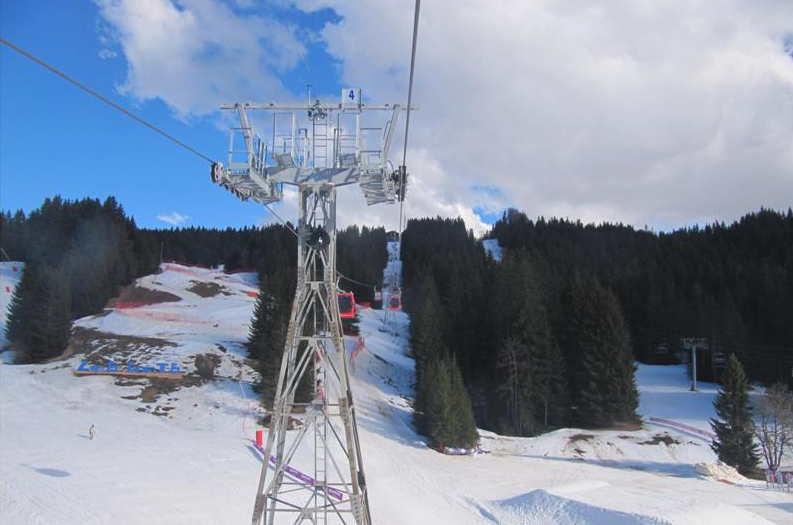
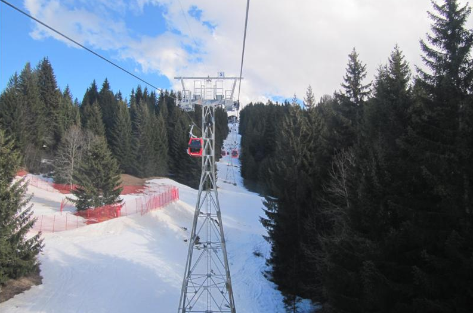
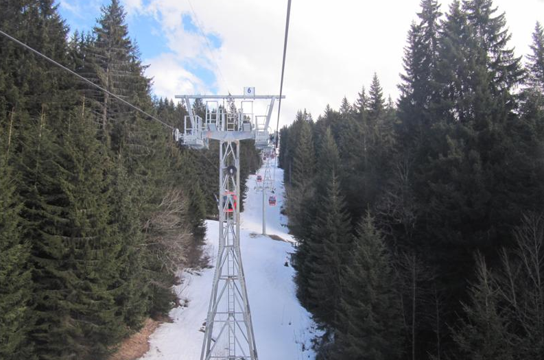
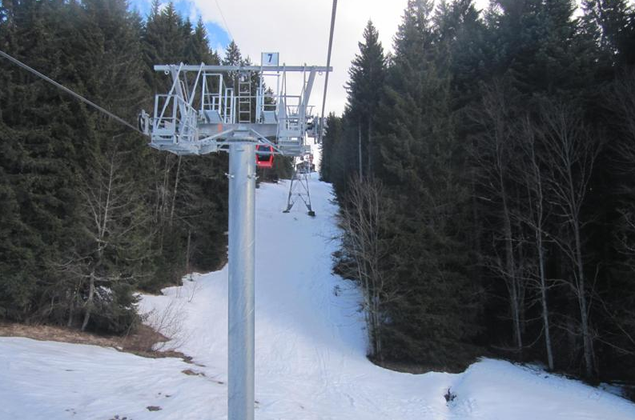
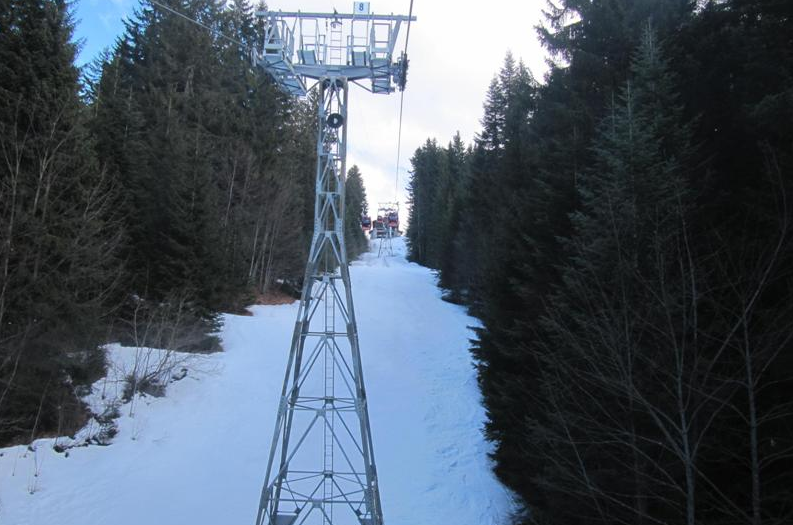
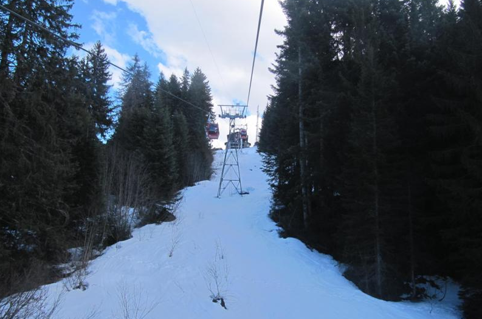
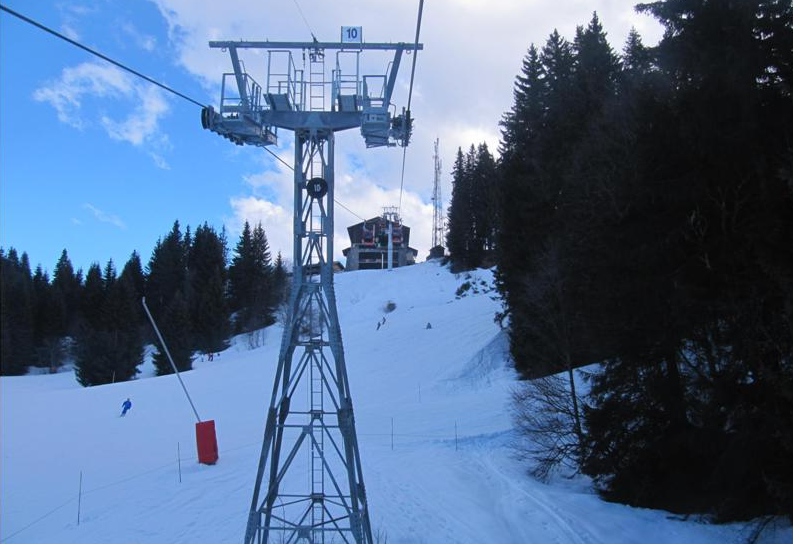
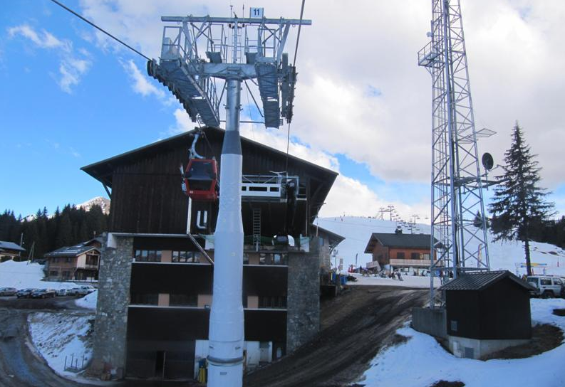
Gare amont
Le bâtiment de la gare amont ayant été conservé, la nouvelle gare Satellit a dû être adaptée à l'intérieur d'une structure initialement dimensionnée pour l'ancienne télécabine 4 places. Un imposant massif en béton a été construit à l'arrière de la gare, relié à la station Satellit par trois tiges métalliques, afin de sécuriser la tension de l'appareil. Le bâtiment abrite également un garage permettant le rangement de l'ensemble des cabines.
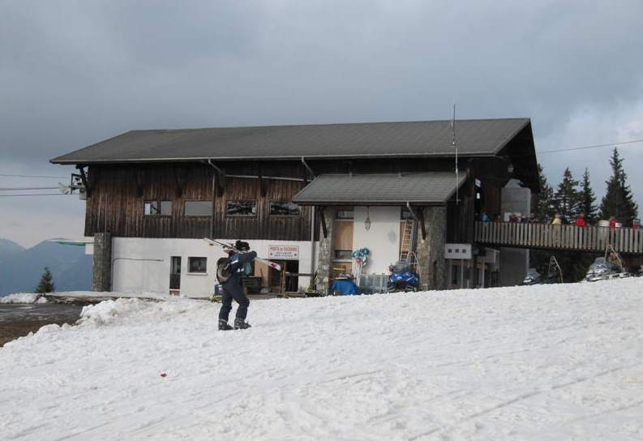
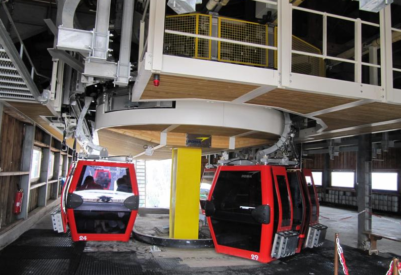
Conclusion
Le remplacement de la télécabine des Chavannes par un appareil à gares Satellit et cabines modernes Diamond 6 places a permis de redynamiser le front de neige du secteur. Cette nouveauté 2010-2011 assure le transport des skieurs plus rapidement et dans de bien meilleures conditions de confort que l'appareil de 1973. Principalement destinée à la clientèle familiale et débutante, elle constitue un complément parfait au télésiège des Chavannes Express, les deux appareils offrant ensemble un débit total de 4200 personnes par heure sur le front de neige principal.